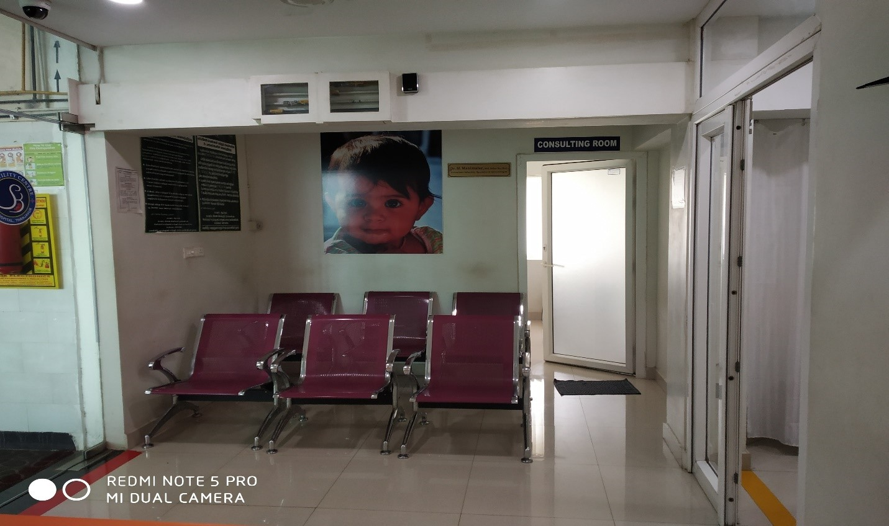

FOR THE FEMALE PARTNER
Gynaecologist dedicated for Infertility services.
- In-House Embryologist
- HSG and TVS with Doppler, Hormone assay
- Laparoscopy and Hysteroscopy
- Interventional Hysteroscopy (myoma and septal resection with holmium laser)
- IUI, IVF and ICSI
- Blastocyst cultures and day 5 transfers
- Sperm, Egg and Embryo freezing
- Oocyte Donor Programme
- Frozen Embryo Transfer
- Donor Embryo Transfer
- PGD and PGS (Pre implantation genetic diagnosis and screening)
At SB Hospital Assisted Reproductive Cente, we have put together a team of well qualified and experienced consultants, Embryologist and other fertility technicians. As THE most modren high tech specialised equipments are available this team has been doing advanced procedures such as IVF, ICSI. The successful Pregnancy rates for these procedures at SB HOSPITAL ART CENTRE are very high compared to contemporary results. Hysteroscopic surgical procedures are done whenever there are mechanical impediments for pregnancy in the uterus. Laparoscopic surgical procedures are also done whenever necessary to facilitate conception for example ovarian drilling is done in certain patients with Polycytic ovaries to enhance the chances of pregnancy.
SB Ferility Centre

